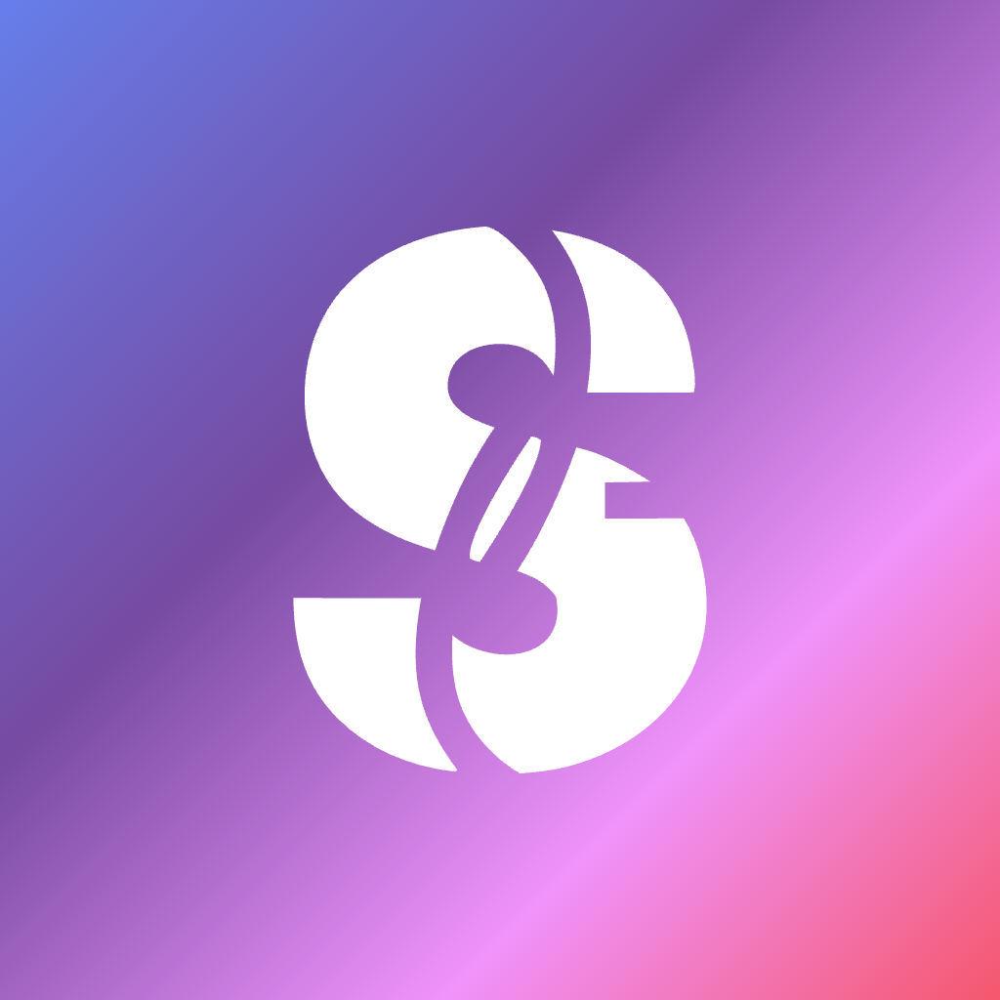
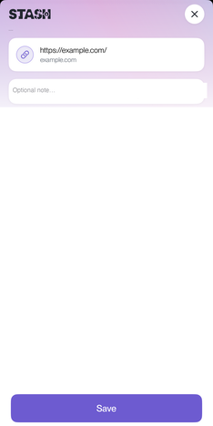

Post-sign-in screen (HowToStashView). Will chose the swipe carousel outright over the three-column comparison this prototype used to show — this revision carries his three panel-level fixes below.
Try it
Drag the panel, use ← → arrow keys, tap a dot, or hit Next. Next becomes Got it on the last panel.
Skip dismisses without marking the tutorial seen (reappears next sign-in).
Changes this revision
Panel 1 — art is now the share glyph itself (iOS system blue), not a Safari screenshot: instantly recognizable regardless of which app you're sharing from.
Panel 2 — shows the actual share-sheet row with a glowing ring around Stash, plus a "can't find it? check More" hint.
Panel 3 — recaptured ungated (no subscribe strip); Save reads enabled.
9:41●●●
How to easily stash
Save from any app: tap Share, then Stash.
Step 1Look for the share button
In Safari, Photos, or any app, tap Share.
Step 2Pick Stash
Reminders

Stash
More
Copy Photo
Add to Album
AirPlay
Choose Stash in the share sheet.
Don't see Stash? Tap More, then add Stash to your favorites.
Step 3Add a note, save

Add an optional note, then Save. Stash does the rest.